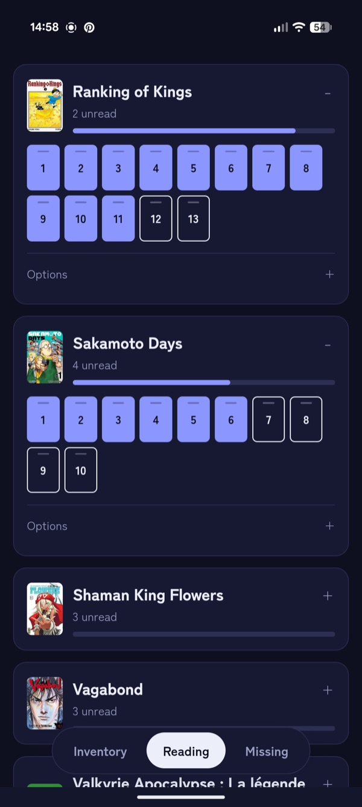
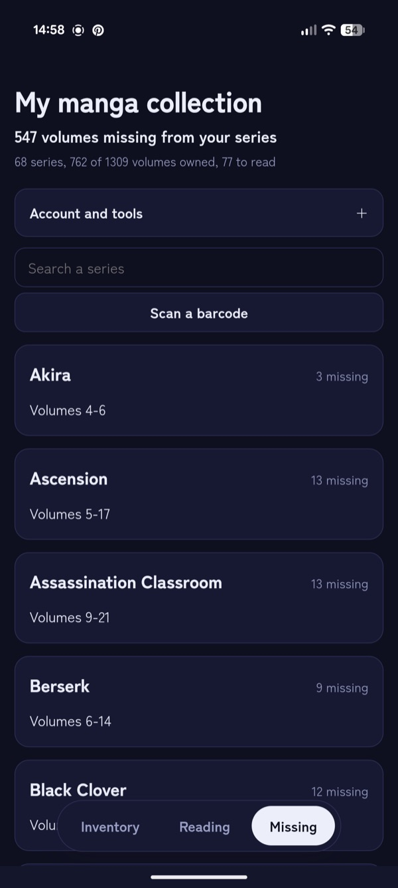

Manga Tracker
J'achetais des mangas plus vite que je ne les lisais. Mon appli de collection évitait les doublons, mais ne me permettait pas de savoir ce que j'avais lu ou non. J'ai donc créé la mienne : inventaire tome par tome, suivi lu / non lu, et liste des tomes manquants pour mes prochains achats.
Le code-barres qui ne trouvait rien. Ma première version n'interrogeait que Google Books, qui ne référence pas les éditions françaises de beaucoup de mangas : de nombreux tomes scannés restaient introuvables. J'ai ajouté le catalogue de la Bibliothèque nationale de France, qui recense les livres publiés en France. Les sources sont interrogées l'une après l'autre (Google Books, puis la BnF, puis Open Library), et seulement si la précédente n'a rien trouvé, pour transmettre l'ISBN au moins de services possible. Certains tomes ne sont encore référencés nulle part : on peut alors créer la série à la main en lui donnant un nom.
La couverture qui n'était pas la bonne. La BnF ne fournit pas d'images : quand le code-barres ne suffit pas, la couverture est cherchée par nom de série. Or beaucoup de mangas portent le nom d'un livre : « Monster » affichait le roman de Walter Dean Myers, « Origin » celui de Dan Brown, « Leviathan » l'ouvrage de Thomas Hobbes. En testant la recherche sur les 66 séries de ma collection, j'ai compté 9 couvertures fausses. La recherche privilégie désormais les livres classés manga, et n'accepte les autres que si leur titre se termine par un numéro de tome, ce que les romans ont rarement. Il ne reste qu'une erreur, due à une fiche mal renseignée dans le catalogue. Pour les séries mal reconnues, une grille propose plusieurs couvertures : il suffit de toucher la bonne, en ajoutant au besoin le nom de l'auteur à la recherche.
Fonctionnalités : ajout de tomes par scan du code-barres (ISBN), avec recherche dans trois catalogues, ou création manuelle si la série est introuvable, couvertures trouvées automatiquement ou choisies dans une grille, marquage « lu jusqu'au tome N », liste des tomes manquants pour les prochains achats, connexion par email, synchronisation entre ordinateur et téléphone, sauvegarde dans un fichier, installation sur l'écran d'accueil avec ouverture hors connexion.